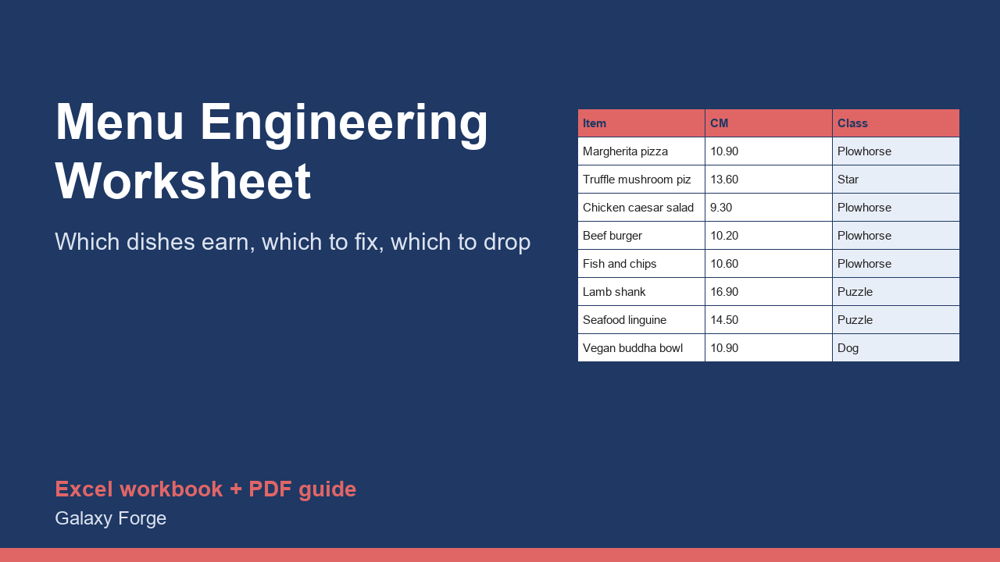

Enter each dish's price, plate cost and units sold, and the worksheet classifies every item by contribution margin and popularity using the standard menu-engineering method, with food cost % and menu mix.
Menu engineering is the method restaurants use to decide which dishes to promote, reprice, rework or remove. It looks at two things for every item: how much money each plate contributes after its ingredient cost (contribution margin), and how often it sells compared with the rest of the menu.
This worksheet applies the standard Kasavana and Smith approach. An item is popular when its share of the menu mix reaches 70% of an equal share (with 20 items, 70% of 5% = 3.5%), and profitable when its contribution margin is at or above the menu's weighted average. That gives four classes: Stars (popular and profitable), Plowhorses (popular, low margin), Puzzles (profitable, unpopular) and Dogs (neither).
It also shows each item's food cost %, total contribution, and the count of items in each class, so you can see the shape of the whole menu at a glance.
Run it on one menu section at a time (starters, mains, desserts) for one sales period, using counts from your point-of-sale system.
1) On Menu, list each item in one menu section with its selling price (net of sales tax), plate cost and units sold for the period. 2) Read the class for each item. 3) Read Summary for the thresholds, totals and the number of items in each class.
Price: $19, one-time. Download: restaurant_menu_engineering_worksheet.xlsx (Menu, Summary) and this guide. Works in Excel 2016 or later, Excel for Mac and Excel on the web; opens in Google Sheets and LibreOffice.
New product, listed 2026-10-31: no sales or reviews yet. Example figures in the workbook are illustrative.
This workbook is an analysis tool, not financial or business advice. Its results depend on accurate plate costs and sales counts from your own records.